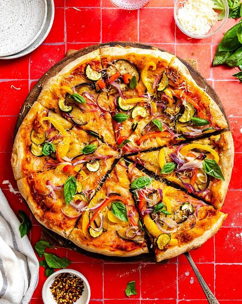
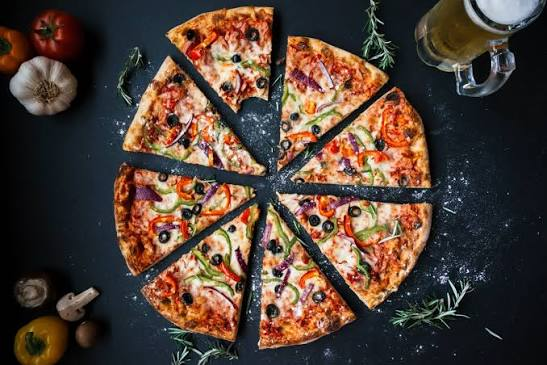

pizza


Here is the description about the steps it take
to produce this amazing pizza
Ingredients
- Pizza Dough (or all-purpose/bread flour)
- Tomato Sauce (canned or pureed)
- Mozzarella Cheese (grated or fresh)
- Olive Oil (for the dough or pan)
- Salt (or a single seasoning/topping like basil or pepperoni)
steps
- Prepare the Dough: Preheat your oven to 400F (204C).
- Shape the Base: Mix flour, yeast, sugar, salt, olive oil, and warm water. Knead the mixture into a soft dough and let it rise until it doubles in size.
- Add the Sauce: Punch down the risen dough and roll or stretch it out into a flat round circle on a floured surface.
- Add Cheese and Toppings: i>prinkle freshly shredded mozzarella cheese and your favorite toppings (like vegetables or meats) on top of the sauce.
- Bake: Place the pizza in a preheated hot oven (around 450F to 500F / 230C to 260C) and bake for 8 to 12 minutes until the crust is golden and the cheese is melted.
Home page